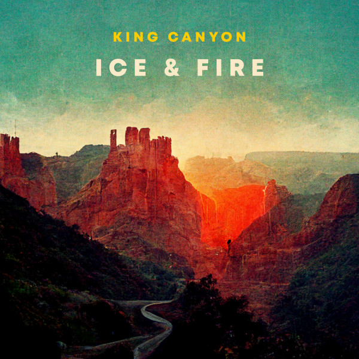

Biblioteca de Músicas
Modo Compatibilidade
Ice & Fire - King Canyon
Música disponibilizada através da biblioteca gratuita do Youtube
Too Little Too Late - JoJo
Música disponibilizada através do canal VESGO no Youtube.
Navegação de Paginas: anterior